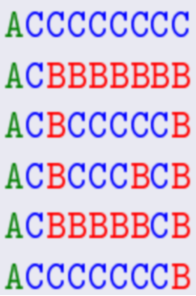

题目链接：https://qoj.ac/contest/531/problem/886
题目大意：给你一个矩阵，每个位置为 $1/2$ ，分别表示恰有一种颜色，和 $\ge 2$ 种颜色。
要求给出三种颜色的染色方案，满足符合上面的矩形，且单个染色是联通的。
我的做法
说来话长，特判掉没有 $2$ ，$n=1$ 和 $m=1$ 的情况。
然后假设每行都有一个 $2$ ，那么两种颜色就够了，奇偶行分别主要染不同的颜色，次要染不同的颜色。（表示 $1/2$ 分别染什么颜色，$1$ 染主要颜色 ，$2$ 主要次要都染）
假设有一个行没有 $2$ ，很自然的想把这一行作为枢纽，用来连接所有的 $0$ ，然后上面主要为 $1$ ，下面主要为 $2$ 。
具体来说，不妨只看单侧，即假设这一行为最后一行：
一种自然的想法是，如果这一列有 $2$ ，那么整一列主要染 $0$ ，次要染 $1$ ，但是这样如果相邻列都有 $2$ ，$1$ 就不连通了，因此会想这种情况下就让下一列主要染 $1$ ，次要染 $0$ 就行了。
综上得到做法，若某列有 $2$ ，先把这一列全部先染个 $0$ ，同时如果下一列相邻格子也有 $2$ ，就把这个格子也染成 $2$ ，然后跳过下一列，染完后，如果一个格子为 $2$ 或者没染过色，就染 $1$ ，对两边分别做一次就行了。
时间复杂度：$O(nm)$ 。
1
2
3
4
5
6
7
8
9
10
11
12
13
14
15
16
17
18
19
20
21
22
23
24
25
26
27
28
29
30
31
32
33
34
35
36
37
38
39
40
41
42
43
44
45
46
47
48
49
50
51
52
53
54
55
56
57
58
59
60
61
62
63
64
65
66
67
68
69
70
71
72
73
74
75
76
77
78
79
80
81
82
83
84
85
86
87
88
89
90
91
92
93
94
95
96
97
98
99
100
101
102
103
104
105
106
107
108
109
110
111
112
113
114
115
116
117
118
119
120
121
122
123
124
125
126
127
128
129
130
131
132
133
134
135
136
137
138
139
140
141
142
143
144
145
146
147
148
149
150
151
152
153
| #include<bits/stdc++.h>
using namespace std;
typedef pair<int, int> PII;
const int N = 2e2 + 5;
void get_char_array(char *s){
static char ss[N];
cin >> ss;
memcpy(s + 1, ss, sizeof(char) * (strlen(ss) + 1));
}
int type;
char st[N];
int a[N][N], tmp[N][N];
int n, m;
bool be[3][N][N];
bool vr[N], vc[N];
bool work1(){
vector<PII> seg;
for(int l = 1; l <= m; l++){
if(a[1][l] == 1) continue;
int r = l;
while(r < m && a[1][r + 1] == 2) r++;
seg.push_back({l, r});
l = r;
}
if(seg.size() >= 3) return 0;
for(int j = seg[0].first; j <= seg[0].second; j++) be[2][1][j] = 1;
int t = 1;
if(seg.size() == 1) t = 0;
for(int j = 1; j <= seg[t].second; j++) be[0][1][j] = 1;
for(int j = seg[t].first; j <= m; j++) be[1][1][j] = 1;
return 1;
}
void putone(int t){
bool bk = 0;
for(int i = 1; i <= n; i++){
for(int j = 1; j <= m; j++){
if(a[i][j] == 2){be[t][i][j] = 1; bk = 1; break;}
}
if(bk) break;
}
}
bool work2(){
putone(2);
for(int i = 1; i <= n; i++){
for(int j = 1; j <= m; j++){
if(a[i][j] == 2) be[0][i][j] = be[1][i][j] = 1;
else be[i & 1][i][j] = 1;
}
}
return 1;
}
void rotate(auto f){
for(int i = 1; i <= n; i++){
for(int j = 1; j <= m; j++) tmp[j][i] = f[i][j];
}
for(int i = 1; i <= m; i++){
for(int j = 1; j <= n; j++) f[i][j] = tmp[i][j];
}
}
int sta[N], top;
bool solve(){
cin >> n >> m;
bool b2 = 0;
for(int i = 1; i <= n; i++){
get_char_array(st);
for(int j = 1; j <= m; j++){
a[i][j] = st[j] - '0';
if(a[i][j] == 2){
vr[i] = vc[j] = 1;
b2 = 1;
}
}
}
if(!b2){
if(n * m <= 2) return 0;
int cnt = 0;
for(int i = 1; i <= n; i++){
for(int j = 1; j <= m; j++) be[min(cnt, 2)][i][j] = 1, cnt++;
}
return 1;
}
if(n == 1) return work1();
if(m == 1){
type = 1;
rotate(a);
swap(n, m);
return work1();
}
int posi = 0;
for(int i = 1; i <= n; i++){
if(!vr[i]){posi = i; break;}
}
if(!posi) return work2();
if(posi == 1) putone(1);
if(posi == n) putone(2);
for(int j = 1; j <= m; j++) be[0][posi][j] = 1;
for(int j = 1; j <= m; j++){
bool bk = 0;
for(int i = 1; i < posi; i++){
if(a[i][j] == 2) bk = 1;
}
if(bk){
for(int i = 1; i < posi; i++){
be[0][i][j] = 1;
if(j < m && a[i][j + 1] == 2) be[0][i][j + 1] = 1;
}
j++;
}
}
for(int j = 1; j <= m; j++){
bool bk = 0;
for(int i = posi + 1; i <= n; i++){
if(a[i][j] == 2) bk = 1;
}
if(bk){
for(int i = posi + 1; i <= n; i++){
be[0][i][j] = 1;
if(j < m && a[i][j + 1] == 2) be[0][i][j + 1] = 1;
}
j++;
}
}
for(int i = 1; i <= n; i++){
for(int j = 1; j <= m; j++){
if(a[i][j] == 2 || !be[0][i][j]){
if(i < posi) be[1][i][j] = 1;
else be[2][i][j] = 1;
}
}
}
return 1;
}
int main(){
if(!solve()) cout << "impossible\n";
else{
if(type){
for(int t = 0; t <= 2; t++) rotate(be[t]);
swap(n, m);
}
for(int t = 0; t <= 2; t++){
for(int i = 1; i <= n; i++){
for(int j = 1; j <= m; j++){
if(be[t][i][j]) st[j] = t + 'A';
else st[j] = '.';
}
cout << st + 1 << "\n";
}
cout << "\n";
}
}
return 0;
}
|
官方做法
蚌埠住了，我太菜了，看到第一句话的那一刻起，我感觉赛时构造了一两个小时还没构造出来的我像个小丑一样，构造题真难啊。
注意到，如果我们能给这个矩阵划分成三个独立的连通块，且满足每个点四联通附近都有一个别的连通块的点，那么就显然做完了。
以下是一种可能的方案：

在 $n,m$ 小的时候这种方案可能用不了，特判一下就行了，在此不再赘述。（其实是因为我没细想，因为我觉得最关键的就是上面那句话，以及一种可能的方案，在完成这些后，后面的细节处理就只是时间问题了）